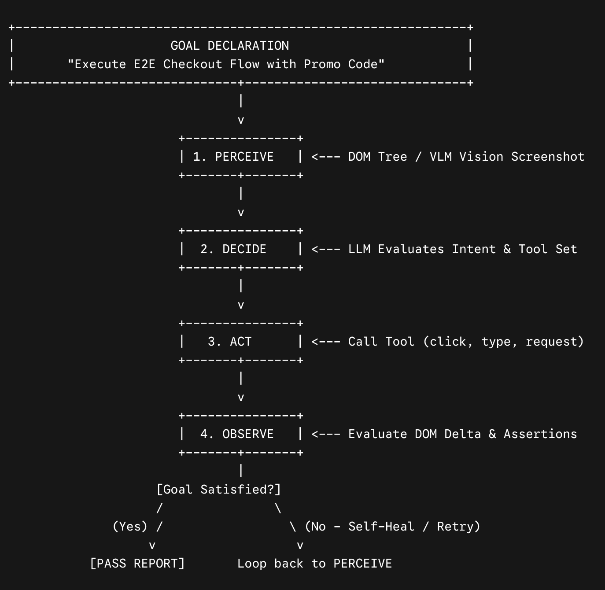

SDET Journal
Writing
Notes on test automation, agentic AI for QA, and what 14 years of quality engineering taught me.
From Scripts to Agents: Building Agentic AI Workflows for Autonomous Regression Testing
Scripted automation broke every time a locator changed. Agentic QA gives an AI agent tools and a goal, then lets it perceive, decide, act and observe at runtime. How it works, how to structure multi-agent graphs, and where it fails in CI.

14 Years in Quality Engineering: From Clicking Buttons to Edge AI Architecture
From Excel test matrices in 2012 to agentic AI and edge hardware validation in 2026: how the role changed at each stage, and the lessons that stayed true the whole way.